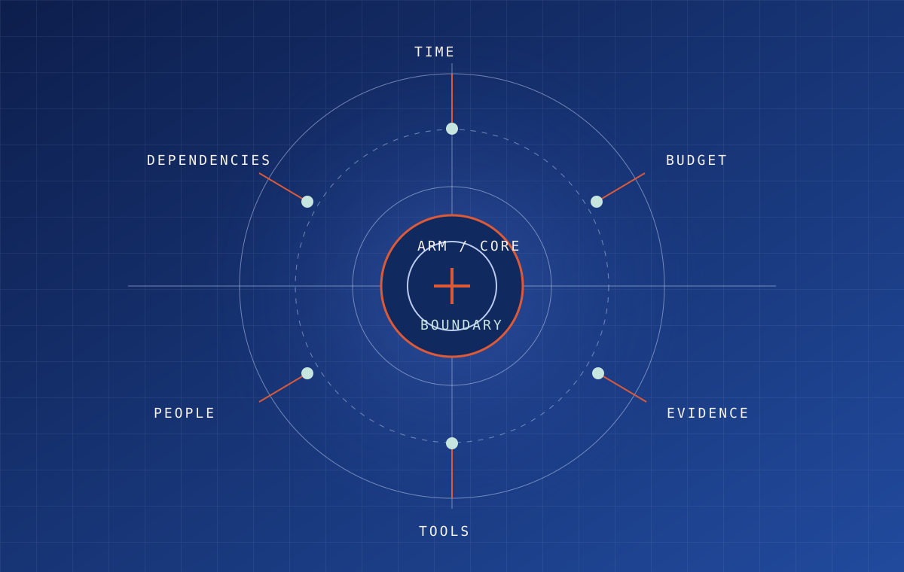
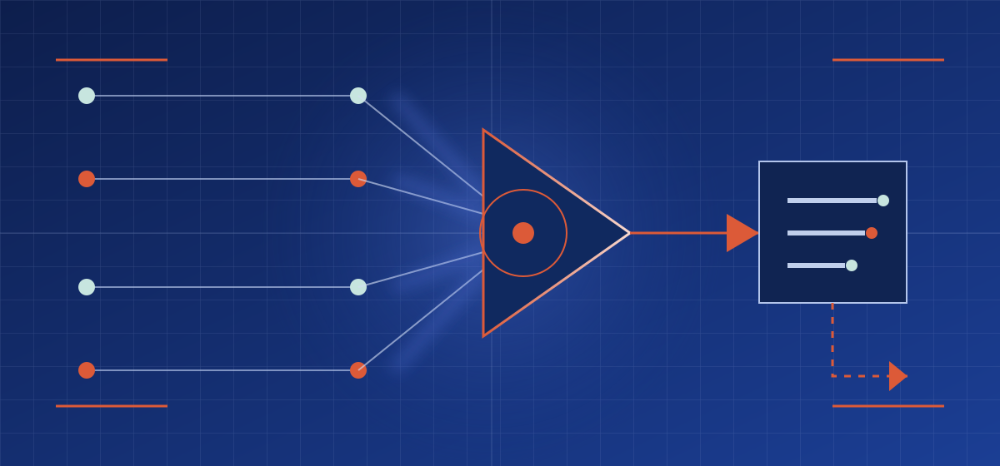

Resources, limits, downstream dependencies, and owner.
EXECUTIVE OPERATING GUIDANCE / 01
Autonomy needs
an operating boundary.
When a workflow can touch resources, shape a decision, or change another person’s options, capability is not enough. The relevant question is what it may do, who owns the exception, and how the next reviewer can reconstruct it.
Run the readiness check FIVE OPERATING QUESTIONS
NO ACCOUNT, SCORE, OR SUBMISSION
NO ACCOUNT, SCORE, OR SUBMISSION

00OPERATING
POSITION
POSITION
A useful system makes its power, limits, and consequences legible.
Autonomous Resource Management is a discipline for making delegation inspectable. It connects resource scope, decision rights, traceable records, observability, and accountable human escalation so a consequential workflow is not mistaken for an unowned one.
01DECISION
THRESHOLD
THRESHOLD
Available capability is not implied authority.

Scope signals converge at an explicit decision boundary. A resulting event creates a reviewable record; an exception leaves the ordinary route for a named decision owner.
Recommendation, permitted execution, prohibited action, exception.
Evidence, context, authorization, event, outcome, uncertainty.
02READINESS
CHECK
CHECK
Five questions before a workflow can travel.
Choose the question that most closely reflects the condition you need to make operationally explicit. Each route is a distinct executive brief, not a generic funnel.
DUE-DILIGENCE FAQ →01 / RESOURCE
What could this workflow consume, alter, disclose, or commit?
Inventory the real resources and dependencies before treating a workflow as low-risk.
→02 / AUTHORITYWhat may it recommend, execute, approve, or never touch?
Keep analysis, execution, approval, and exception rights separate.
→03 / RECORDCould another person reconstruct this decision without guessing?
Keep source, scope, authorization, action, outcome, and unresolved uncertainty together.
→04 / OBSERVEWhat reveals resource drift, failure, or a breached condition?
Define the evidence that turns a routine action into a condition worth pausing.
→05 / ESCALATEWho owns the exception and the decision to resume?
Predefine stop conditions, accountable decision owners, and restart criteria.
→03TRACE-RECORD
VERIFIER
VERIFIER
Test whether a record can be reconstructed.
This local-only example asks five minimum review questions. Select a record element to mark it represented; deselect it to see what a subsequent reviewer would still need. Nothing is submitted, retained, scored, or transmitted.
EXAMPLE ONLY / NO CERTIFICATION / NO LIVE OPERATIONAL DATA
EXAMPLE RECORD / FACILITIES SCHEDULINGLOCAL-ONLY
Not reconstructable yet: source, scope, decision right, action, outcome missing.
Select each record element to see the minimum questions a later reviewer needs.04OPERATING
SILOS
SILOS
Move through the question that matters now.
Each brief stays narrow enough to be useful in an executive conversation, while connecting to the next material condition without repeating the reference or learning properties.
OPERATING MODEL / 04
Governed autonomy is a system of explicit handoffs.
See how resource boundaries, decision rights, evidence records, operating roles, and escalation connect across a real delivery cycle.
AUTHORITY DESIGNDecision rights
Separate recommendations, bounded execution, approval, and the actions that should remain unavailable.
OPEN THE RIGHTS BRIEF →OPERATING SIGNALResource observability
Make resource use, dependencies, and drift visible before a small action becomes an unreviewed commitment.
OPEN THE OBSERVABILITY BRIEF →REVIEWABILITYTraceable records
Build a record that carries the source, context, decision, action, and outcome a later reviewer needs.
OPEN THE RECORD BRIEF →EXCEPTION DESIGNAccountable escalation
Predefine the signal that stops a workflow and the person who can resolve a material exception.
OPEN THE ESCALATION BRIEF →05CAPABILITY
SYSTEM
SYSTEM
Expertise is not a title. It is an accountable handoff.
Seven complementary capabilities move work from evidence to useful publishing, small reversible tests, implementation, discovery, continuity, and clean-up.
VIEW THE CAPABILITY SYSTEM →R / 01
Researcher
Bounds claims with evidence and identifies the unanswered question.
C / 02Content developer
Makes approved material useful for a specific reader.
P / 03Prototype
Reduces uncertainty with a reversible demonstration.
B / 04Builder
Implements reviewed work with validation and rollback.
G / 05Grower
Connects useful work to a relevant audience openly.
M / 06Maintainer
Preserves correctness, continuity, and release discipline.
S / 07Sweeper
Removes stale or unsafe material while retaining provenance.
06CONTINUE
DELIBERATELY
DELIBERATELY